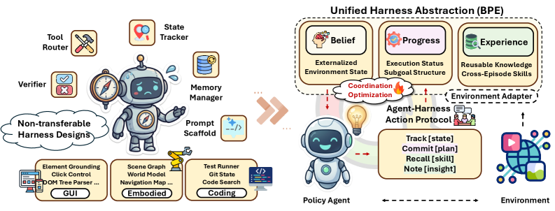
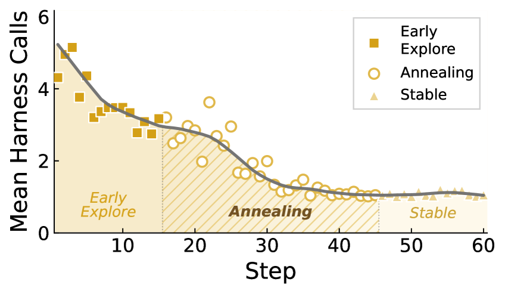

EvoHarness-RL: Training Harness Usage as a Capability (UIUC/Meta)
Paper: "EvoHarness-RL: Learning Self-Evolving Runtime Harness for Long-Horizon LLM Agents" (arXiv 2608.05446, accepted to LLA@COLM 2026). Authors: Xuying Ning, Dongqi Fu, Tianxin Wei, Hanqing Zeng, Yuanchen Bei, Bingxuan Li, Zihao Li, Qifan Wang, Xiang Shen, Yifan Wu, Jiayi Liu, Hong Li, Yinglong Xia, Xiangjun Fan, Hanghang Tong, Jingrui He (UIUC + Meta AI).
TL;DR
- Everyone keeps bolting memory, state trackers, and skill banks onto agents; EvoHarness-RL asks the neglected complementary question — when is touching that external state actually worth a turn of the interaction budget? — and makes the answer a trained policy rather than a prompt convention.
- The harness is abstracted into three policy-facing state classes — Belief (what's true in the environment), Progress (subgoal/execution status), Experience (cross-episode skills, mistakes, search priors) — accessed via four meta-actions (
track,commit,recall,note) that share the same action budget as environment actions. Training is SFT on teacher demos, then cost-aware GRPO. - On ALFWorld with Qwen3-8B: ReAct 47.9% → 96.9% on the seen split (matching Claude Opus 4.5's ReAct 96.4%) and 86.6% unseen. Two clean dynamics emerge: harness annealing (calls drop from frequent scaffolding to ~1/episode as routines get internalized into weights) and harness evolution (the skill store expands, then consolidates and forgets).
Why this matters
The harness-engineering literature — including several papers in this tracker — has been optimizing what the scaffold contains: better memory schemas, better skill libraries, offline-searched harness configurations. All of it leaves the agent's runtime policy for using the scaffold as prompt text and heuristics. That's exactly the failure mode anyone who has watched an agent obsessively re-query its memory (or never query it) will recognize: the support exists, but the decision of when to form, read, update, and consolidate it was never trained.
EvoHarness-RL's framing — "harness policy learning" — treats harness access as a first-class action in the MDP, competing with environment actions for a bounded turn budget. The headline implication is bigger than the ALFWorld numbers: if harness coordination is trainable, the boundary between "engineered scaffold" and "model capability" becomes dynamic. Their harness-annealing result is early empirical evidence that RL moves behaviors across that boundary — routine scaffold use gets absorbed into the weights, and only genuinely informative external-state accesses survive. That is the mechanism the "harness features get internalized over time" thesis (see the long-horizon agents survey in this tracker) has been missing.
The core idea

Figure 1 from the paper: existing harnesses are heterogeneous and manually controlled; EvoHarness-RL exposes them as three policy-facing states (Belief, Progress, Experience) coordinated through compact harness actions — track, commit, recall, note.Concrete harnesses contain many domain-specific components, but the authors argue they serve three recurring failure modes of long-horizon interaction: losing track of what is currently true, forgetting what's done vs. pending, and rediscovering procedures/mistakes across episodes. So the harness renders, at each step \(t\),
where \(B_t\) is Belief (task-relevant environment facts inferred from interaction), \(P_t\) is Progress (subgoal-status records \((g_i,\sigma_i)\)), and \(E_t\) is Experience (cross-episode skills, failure modes, search priors).
The policy interacts with this workspace via four meta-actions — track reads from \(B_t\), commit writes execution updates to \(P_t\), recall retrieves from \(E_t\), note stages new insights for later consolidation into \(E_t\) — and chooses from the joint action space
where \(o_t\) is the environment observation and \(c_t\) the task context. The crucial design decision: harness actions consume the same interaction budget as environment actions, so "should I check my memory?" has a real opportunity cost the policy must learn to price.
A per-environment adapter grounds the interface without leaking domain specifics into the trainable layer. In ALFWorld: Belief is a background world-state tracker (queried via track[object] / track[world] — the state exists but is not dumped into context by default); Progress is a bounded subgoal-status list; Experience is a skill store organized into general skills, task-specific skills, common mistakes, and object-location search priors, kept fixed within each rollout batch and merged at epoch boundaries by a consolidation model via add/update/remove operations.
How it works
Stage 1 — supervised harness fine-tuning. Teacher trajectories are collected through the same BPE interface; the teacher outputs one <think>...</think><action>...</action> step at a time, where the action is either an ALFWorld command or a BPE meta-action. Qwen3-8B is fine-tuned on these next-action demonstrations, learning the action protocol's semantics and how to externalize useful state. Teacher-rollout experience also seeds the skill store used in RL.
Stage 2 — cost-aware GRPO. From the SFT checkpoint, GRPO optimizes a trajectory reward that combines a dominant sparse success term with shaping terms for adaptive harness use:
with \(R_{\mathrm{succ}}(\tau) = 10\cdot\mathbf{1}[\text{solved}]\) as the gatekeeper and the efficiency bonus \(R_{\mathrm{eff}}(\tau)=\max(0,\,1-|\tau|/T_{\max})\) granted only on success (\(|\tau|\) = trajectory length, \(T_{\max}\) = step cap) — so redundant harness queries are penalized without discouraging necessary ones. To prevent collapse into either ignoring \(\mathcal{A}_{\mathrm{bpe}}\) or looping on it, a diversity bonus is cosine-annealed over training:
where \(u\) is the current RL epoch and \(U\) the annealing horizon — broad exploration of harness actions early, forced specialization late. \(R_{\mathrm{spam}}\) and \(R_{\mathrm{inv}}\) are fixed penalties for degenerate repetition and malformed syntax.
# EvoHarness-RL core loop (condensed from Secs. 2.3-2.4)
SFT: fine-tune base LLM on teacher demos over A_env ∪ {track,commit,recall,note}
E ← skill store seeded from teacher rollouts
for epoch u = 1..U: # cost-aware GRPO
freeze skill store E for this batch
for each task, sample group of rollouts:
B, P ← empty; adapter updates B in background each env step
for t = 1..T_max:
a_t ~ π_θ(· | o_t, (B_t,P_t,E_t), c_t)
if a_t ∈ A_env: env step → new observation
elif track: return queried belief view from B
elif commit: write subgoal/status to P
elif recall: retrieve from E; bump usage counts
elif note: append insight to temporary note buffer
R(τ) = 10·1[solved] + λ_eff·R_eff + λ_div(u)·R_div − penalties
GRPO update of π_θ with group-relative advantages
# harness evolution at epoch boundary:
consolidation model merges note buffers + trajectory summaries
into E via add / update / remove (retain frequently recalled,
merge redundant, evict rarely useful)
Results
On the 140-task ALFWorld seen split, EvoHarness-RL (Qwen3-8B) reaches 96.9% average success, +49.0 absolute over the ReAct baseline (47.9%) — essentially matching Claude Opus 4.5 with ReAct (96.4%). The staged progression validates the pipeline: prompt-time BPE alone 56.4% → SFT 68.6% → GRPO 96.9%. It also clearly beats plain GRPO without the harness (65.6%), SkillOS (80.2%), and SkillRL (89.9%, though on Qwen2.5-7B), and frozen memory methods (ExpeL 49.3%, Dynamic Cheatsheet 52.1%, ACE 51.4%).
The prompt-time harness transfers across scales: as a pure inference-time scaffold it lifts GPT-4.1 from 47.9% to 70.0% (+22.1), GPT-5 from 60.7% to 85.0% (+25.7), and pushes Claude Opus 4.5 to 98.5%. Ablations show all three components matter roughly equally — removing Belief drops the frozen-harness average to 50.0%, Progress to 50.7%, Experience to 48.6% (from 56.4%) — with intuitive task-level signatures (no Belief hurts Clean/Cool localization; no Progress hurts multi-subgoal Pick2).
On the unseen split: ReAct 50.0%, prompt-time BPE 77.6%, SFT 69.4% (below prompt-time — imitation overfits teacher harness-use patterns), RL 86.6%. That SFT-dips-then-RL-recovers pattern is good evidence that what GRPO learns is genuinely when access is worthwhile, not memorized call sites.

Figure 3 from the paper: the SFT-initialized policy starts with frequent cognitive-tool calls, then usage drops and stabilizes near one harness call per episode as routine scaffolded behaviors are internalized into the policy.The two dynamics analyses are the most interesting part. Harness annealing (Fig. 3): the agent begins RL with frequent harness calls and stabilizes near ~1 call/episode, keeping access only where expected benefit beats its step cost. Harness evolution (Fig. 4): the skill bank grows rapidly early (general strategies, task procedures, mistakes, search priors), then consolidation merges redundancies and evicts rarely-recalled entries, ending compact but diverse — a curated substrate, not an append-only log.
How it connects
- OpenForgeRL / Training Agents Inside Their Harnesses (this list): OpenForgeRL builds the infrastructure for doing RL through a real harness and finds harness choice shapes what RL can learn; EvoHarness-RL is the natural next step on that axis — don't just train inside the harness, train the harness-usage policy itself. The BPE adapter is a research-scale stand-in for what a Claude-Code-scale version would need.
- TRACE turn-level rewards (this list): EvoHarness-RL's reward is still trajectory-level with hand-built shaping; its harness actions are exactly the kind of turn whose marginal value TRACE's prefix-value telescoping could price directly. A TRACE-style credit signal seems like the principled replacement for the cosine-annealed diversity bonus.
- Agentic Context Management (this list): ACM's lifecycle primitives (scoping, anticipating, compacting-with-consolidation) are the engineering answer to when-to-touch-state; EvoHarness-RL is the learning answer. Its background-updated Belief with selective
trackaccess is scoping made policy-controlled; the epoch-boundary consolidation model is ACM's validated compaction, but on a skill store. - Harness Handbook (this list): Handbook treats production harnesses as codebases needing behavior maps for safe modification; EvoHarness-RL abstracts them into three state roles precisely so the trainable layer stays harness-agnostic. The tension between those two moves — rich harness specificity vs. compact trainable interface — is an open design question.
Critical take
The 96.9% headline needs its context: ALFWorld is a text game with six mostly sequential household task families, small enough that a "bounded subgoal list" suffices for Progress and that a Qwen3-8B can plausibly internalize most of the needed state — which is exactly why harness annealing looks so clean here. Whether annealing to ~1 call/episode generalizes to SWE-style tasks, where the environment state can't fit in weights or context, is untested; the honest prediction is that annealing should plateau higher the larger the external state is relative to model capacity. Baseline comparability is also soft in places (SkillOS/SkillRL numbers are reported by their own papers; SkillRL uses a different backbone). The reward is heavily engineered — five terms, a success scalar of 10, an annealing schedule — and no sensitivity analysis is shown for the \(\lambda\)s; the cosine curriculum smells like a fix discovered after policy-collapse pain (inferred from the framing — verify in the paper's appendix). Finally, "generalization" means ALFWorld-unseen, not cross-domain: the claim that the coordination layer transfers while adapters stay domain-specific is architecture, not yet evidence. None of this undercuts the central contribution: a clean demonstration that when-to-use-the-harness is trainable, measurable, and moves across the model/scaffold boundary during RL.
If you remember three things
- Harness access as a priced action: BPE state (Belief/Progress/Experience) + four meta-actions sharing the environment's turn budget turns "when to consult external state" from prompt convention into a learnable, cost-aware policy decision — Qwen3-8B goes 47.9% → 96.9% on ALFWorld (86.6% unseen).
- Harness annealing is the paper's most generalizable finding: RL internalizes routine scaffold behaviors into weights, and external-state access anneals to ~1 selective call per episode — the scaffold/capability boundary is dynamic under training.
- The two-stage recipe matters: SFT alone hurts generalization (69.4% vs. 77.6% for the untouched prompt-time harness on unseen tasks); only cost-aware GRPO recalibrates access into a strategy that transfers.